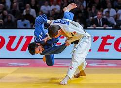

Judo Academy

The Father Vicente Ferrer Judo Federation of India (FVF JFI) Training Centre at Ananthapuram Sports Village (ASV) stands as a testament to the commitment of fostering Judo talent at the grassroots level. Established on 30 May 2015, this accredited Judo Federation of India (JFI) training center serves a pivotal role in identifying and nurturing skilled Judo enthusiasts, with the ultimate aim of propelling them to national and international prominence. It represents a significant milestone, being the second center of its kind in India and the sole one in South India dedicated to the comprehensive development of Judo.
The academy's mandate is clear: to unearth talent from village-level Judo students and elevate their capabilities to compete on the national and international stage. The training center operates as a beacon of opportunity, supporting a total of 12 boys and 13 girls who participate across various age categories, including Sub Junior, Junior, Senior, and Open age groups. These athletes, chosen for their potential, are not only products of raw talent but are meticulously selected through a structured Talent Identification (ID) program developed by the Rural Development Trust (RDT). Integral to the success of the training center are the experienced and trained Judo coaches hailing from the prestigious National Institute of Sports (NIS). Their expertise ensures that the training regimen adheres to international standards, providing the athletes with a solid foundation in the art of Judo. The commitment to excellence is further reflected in the infrastructure of the training center, boasting a state-of-the-art Judo Hall equipped with competition-standard training mats.
Beyond the confines of the Judo Hall, the athletes benefit from facilities designed for their convenience and comfort. Two separate changing rooms cater to the distinct needs of male and female participants, fostering an inclusive environment that aligns with the principles of equality. An office space and storage facility add logistical efficiency to the center's operations, ensuring a seamless and organized approach to talent development.